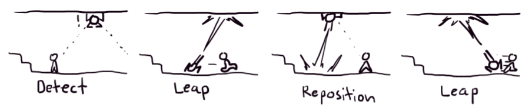
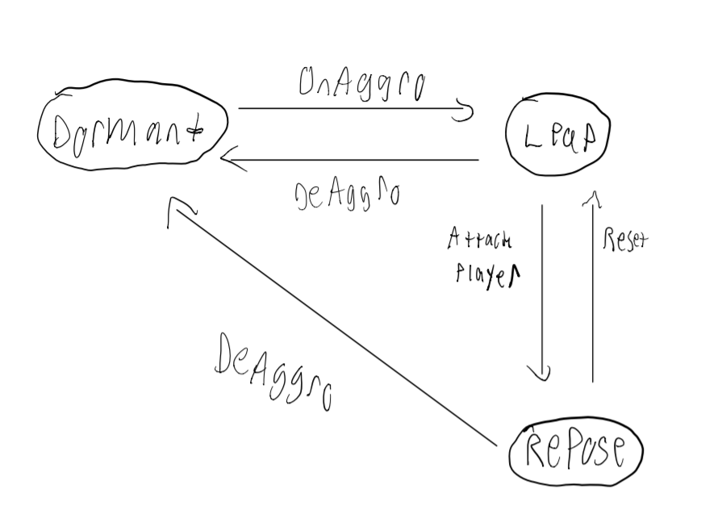

Leading up to the Spring Break Sprint for Project Blue, I worked on making AI for the game's Acrobat enemy. I also created a prototype inspired by games that I have been playing recently.
Acrobat AI:
For this sprint, my main task was to implement the movement behaviors for the Acrobat enemy. The Acrobat is an agile enemy which has the following movement patterns:
The enemy must first detect the player by using a script called "EnemyAggro." The enemy is surrounded by a sphere collider; when the player enters this spear, an event called "OnAggro" is triggered. Upon detecting the player, the enemy will leap to the player's location in order to detect them. Upon executing this attack, there is a brief cooldown, and then the enemy will reset by performing a "repose" to a nearby wall.
In order to implement this behavior, I modeled the Acrobats behavior to a finite state machine:
In the Acrobat's movement script, we can model the movements into three states: "dormant", "leap", and "repose". In the script, there is a check to determine what the current state of the enemy is, then the enemy's movement is modify by directly accessing its "FlyingMovementScript" component (the component that moves the the enemy with the desired velocity).
In the dormant stage, we zero out the acrobat's velocity. Upon an "OnAggro" event, the enemy's aggro script executes a function that changes the acrobat's state to Leaping and then sets the enemy's velocity to launch into the direction of the player. The enemy then transitions to the "repose" stage and returns to its original location. This behavior is repeated until the player exits the Acrobat's aggro range. If the enemy loses aggro of the player, it transitions back to "dormant."
Reflection:
One of the biggest challenges in this sprint was to balance my work on the studio project with my other classes. This past week, I had a midterm in my Operating System's class (EECS 482), in addition to a project being due in this class a few days before. This was by far one of my most stressful weeks while being a student at the University of Michigan. EECS 482 has a negative atmosphere around it: it is considered by many to be one of the hardest classes at the University, with time consuming (difficult) projects and hard exams. I am doing my best to equally distribute time across all of the class I am taking this semester, using resources such as google calendar to block specific times to focus on specific subjects. In addition, I am reaching out to other students taking the class, so that I can form study groups to prepare for the final exam.
In addition, I must ensure that I seek out additional assignments for Project Blue, to go alongside my mandatory ones. I am currently expected to contribute 30 hours biweekly to the project. However, I have not been assigned enough work from my pod leader in order to reach this. To ensure that I am working full time, I will come up with interesting features to experiment with and implement during the future sprints. I have played several games recently (such as the phenomenal Celeste) and have ideas for concepts from those games I would like to recreate. Although they may not end up in the game, working on these featurres will give me more experience programming gameplay, and will help me sharpen my Unity and C# skills.